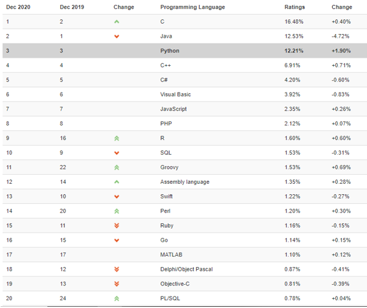

INTELIGENCIA ARTIFICIAL

La Inteligencia Artificial (IA) es la combinación de algoritmos planteados con el propósito de crear máquinas que presenten las mismas capacidades que el ser humano. Una tecnología que todavía nos resulta lejana y misteriosa, pero que desde hace unos años está presente en nuestro día a día a todas horas.
Principales ramas de la Inteligencia Artificial
Machine Learning: Es una rama de computación de la IA que se basa en el entrenamiento de algoritmos de aprendizaje automático a través de datos anteriores.
Deep Learning: Es una rama compleja de ML. Busca construir y entrenar redes neuronales con múltiples capas. El objetivo de dichas redes es ordenar, clasificar datos y encontrar anomalías en sus patrones.
Neural Networks: Las redes neuronales son algoritmos de Machine Learning y modelos computacionales diseñados para funcionar como las neuronas en el cerebro humano. Están entrenadas con un conjunto específico de datos que utilizan para adivinar respuestas a una consulta. Si se producen errores, las redes neuronales ajustan su proceso y lo repiten hasta que los niveles de error disminuyan.
Computer Vision: La visión computacional es la rama de la IA que se encarga de interpretar y extraer el significado de elementos visuales en el mundo real, por ejemplo caracteres impresos, caras y objeto.
Natural Languaje Processing : Hace referencia a la capacidad de máquinas para entender palabras habladas e impresas en lenguaje humano, a diferencia de una computadora la cual entiende lenguajes de programación.
Puedes acceder y descargar el resto de archivos con este enlace. Solo si eres estudiante de UNMSM